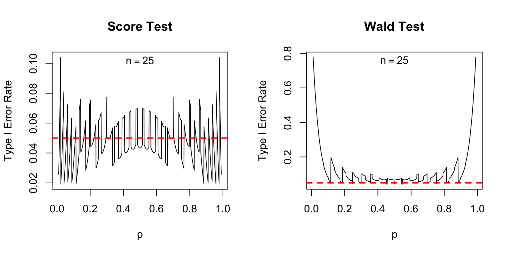
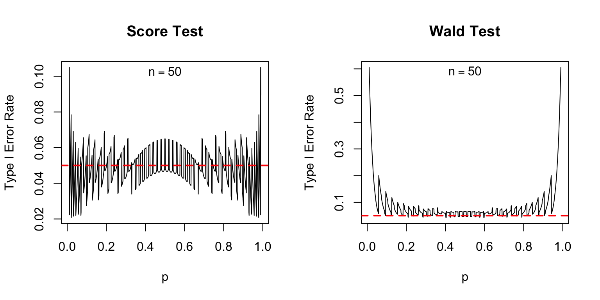
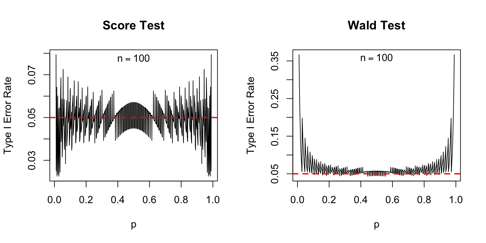

n <- 25
n1 <- 5
p_hat <- n1 / n
alpha <- 0.05
SE_hat <- sqrt(p_hat * (1 - p_hat) / n)
p_hat + c(-1, 1) * qnorm(1 - alpha / 2) * SE_hat[1] 0.04320288 0.35679712Francis J. DiTraglia
February 5, 2022
This is the second in a series of posts about how to construct a confidence interval for a proportion. (Simple problems sometimes turn out to be surprisingly complicated in practice!) In the first part, I discussed the serious problems with the “textbook” approach, and outlined a simple hack that works amazingly well in practice: the Agresti-Coull confidence interval.
Somewhat unsatisfyingly, my earlier post gave no indication of where the Agresti-Coull interval comes from, how to construct it when you want a confidence level other than 95%, and why it works. In this post I’ll fill in some of the gaps by discussing yet another confidence interval for a proportion: the Wilson interval, so-called because it first appeared in Wilson (1927). While it’s not usually taught in introductory courses, it easily could be. Not only does the Wilson interval perform extremely well in practice, it packs a powerful pedagogical punch by illustrating the idea of “inverting a hypothesis test.” Spoiler alert: the Agresti-Coull interval is a rough-and-ready approximation to the Wilson interval.
To understand the Wilson interval, we first need to remember a key fact about statistical inference: hypothesis testing and confidence intervals are two sides of the same coin. We can use a test to create a confidence interval, and vice-versa. In case you’re feeling a bit rusty on this point, let me begin by refreshing your memory with the simplest possible example. If this is old hat to you, skip ahead to the next section.
Suppose that we observe a random sample \(X_1, \dots, X_n\) from a normal population with unknown mean \(\mu\) and known variance \(\sigma^2\). Under these assumptions, the sample mean \(\bar{X}_n \equiv \left(\frac{1}{n} \sum_{i=1}^n X_i\right)\) follows a \(N(\mu, \sigma^2/n)\) distribution. Centering and standardizing, \[ \frac{\bar{X}_n - \mu}{\sigma/\sqrt{n}} \sim N(0,1).\] Now, suppose we want to test \(H_0\colon \mu = \mu_0\) against the two-sided alternative \(H_1\colon \mu \neq \mu_0\) at the 5% significance level. If \(\mu = \mu_0\), then the test statistic \[T_n \equiv \frac{\bar{X}_n - \mu_0}{\sigma/\sqrt{n}}\] follows a standard normal distribution. If \(\mu \neq \mu_0\), then \(T_n\) does not follow a standard normal distribution. To carry out the test, we reject \(H_0\) if \(|T_n|\) is greater than \(1.96\), the \((1 - \alpha/2)\) quantile of a standard normal distribution for \(\alpha = 0.05\). To put it another way, we fail to reject \(H_0\) if \(|T_n| \leq 1.96\). So for what values of \(\mu_0\) will we fail to reject? By the definition of absolute value and the definition of \(T_n\) from above, \(|T_n| \leq 1.96\) is equivalent to \[ - 1.96 \leq \frac{\bar{X}_n - \mu_0}{\sigma/\sqrt{n}} \leq 1.96. \] Re-arranging, this in turn is equivalent to \[ \bar{X}_n - 1.96 \times \frac{\sigma}{\sqrt{n}} \leq \mu_0 \leq \bar{X}_n + 1.96 \times \frac{\sigma}{\sqrt{n}}. \] This tells us that the values of \(\mu_0\) we will fail to reject are precisely those that lie in the interval \(\bar{X} \pm 1.96 \times \sigma/\sqrt{n}\). Does this look familiar? It should: it’s the usual 95% confidence interval for the mean of a normal population with known variance. The 95% confidence interval corresponds exactly to the set of values \(\mu_0\) that we fail to reject at the 5% level.
This example is a special case a more general result. If you give me a \((1 - \alpha)\times 100\%\) confidence interval for a parameter \(\theta\), I can use it to test \(H_0\colon \theta = \theta_0\) against \(H_1 \colon \theta \neq \theta_0\). All I have to do is check whether \(\theta_0\) lies inside the confidence interval, in which case I fail to reject, or outside, in which case I reject. Conversely, if you give me a two-sided test of \(H_0\colon \theta = \theta_0\) with significance level \(\alpha\), I can use it to construct a \((1 - \alpha) \times 100\%\) confidence interval for \(\theta\). All I have to do is collect the values of \(\theta_0\) that are not rejected. This procedure is called inverting a test.
Around the same time as we teach students the duality between testing and confidence intervals–you can use a confidence interval to carry out a test or a test to construct a confidence interval–we throw a wrench into the works. The most commonly-presented test for a population proportion \(p\) does not coincide with the most commonly-presented confidence interval for \(p\). To quote from page 355 of Kosuke Imai’s fantastic textbook Quantitative Social Science: An Introduction
the standard error used for confidence intervals is different from the standard error used for hypothesis testing. This is because the latter standard error is derived under the null hypothesis … whereas the standard error for confidence intervals is computed using the estimated proportion.
Let’s translate this into mathematics. Suppose that \(X_1, ..., X_n \sim \text{iid Bernoulli}(p)\) and let \(\widehat{p} \equiv (\frac{1}{n} \sum_{i=1}^n X_i)\). The two standard errors that Imai describes are \[ \text{SE}_0 \equiv \sqrt{\frac{p_0(1 - p_0)}{n}} \quad \text{versus} \quad \widehat{\text{SE}} \equiv \sqrt{\frac{\widehat{p}(1 - \widehat{p})}{n}}. \] Following the advice of our introductory textbook, we test \(H_0\colon p = p_0\) against \(H_1\colon p \neq p_0\) at the \(5\%\) level by checking whether \(|(\widehat{p} - p_0) / \text{SE}_0|\) exceeds \(1.96\). This is called the score test for a proportion. Again following the advice of our introductory textbook, we report \(\widehat{p} \pm 1.96 \times \widehat{\text{SE}}\) as our 95% confidence interval for \(p\). As you may recall from my earlier post, this is the so-called Wald confidence interval for \(p\). Because the two standard error formulas in general disagree, the relationship between tests and confidence intervals breaks down.
To make this more concrete, let’s plug in some numbers. Suppose that \(n = 25\) and our observed sample contains 5 ones and 20 zeros. Then \(\widehat{p} = 0.2\) and we can calculate \(\widehat{\text{SE}}\) and the Wald confidence interval as follows
[1] 0.04320288 0.35679712The value 0.07 is well within this interval. This suggests that we should fail to reject \(H_0\colon p = 0.07\) against the two-sided alternative. But when we compute the score test statistic we obtain a value well above 1.96, so that \(H_0\colon p = 0.07\) is soundly rejected:
The test says reject \(H_0\colon p = 0.07\) and the confidence interval says don’t. Upon encountering this example, your students decide that statistics is a tangled mess of contradictions, despair of ever making sense of it, and resign themselves to simply memorizing the requisite formulas for the exam.
How can we dig our way out of this mess? One idea is to use a different test, one that agrees with the Wald confidence interval. If we had used \(\widehat{\text{SE}}\) rather than \(\text{SE}_0\) to test \(H_0\colon p = 0.07\) above, our test statistic would have been
which is clearly less than 1.96. Thus we would fail to reject \(H_0\colon p = 0.07\) exactly as the Wald confidence interval instructed us above. This procedure is called the Wald test for a proportion. Its main benefit is that it agrees with the Wald interval, unlike the score test, restoring the link between tests and confidence intervals that we teach our students. Unfortunately the Wald confidence interval is terrible and you should never use it. Because the Wald test is equivalent to checking whether \(p_0\) lies inside the Wald confidence interval, it inherits all of the latter’s defects.
Indeed, compared to the score test, the Wald test is a disaster, as I’ll now show. Suppose we carry out a 5% test. If the null is true, we should reject it 5% of the time. Because the Wald and Score tests are both based on an approximation provided by the central limit theorem, we should allow a bit of leeway here: the actual rejection rates may be slightly different from 5%. Nevertheless, we’d expect them to at least be fairly close to the nominal value of 5%. The following plot shows the actual type I error rates of the score and Wald tests, over a range of values for the true population proportion \(p\) with sample sizes of 25, 50, and 100. In each case the nominal size of each test, shown as a dashed red line, is 5%.1



The score test isn’t perfect: if \(p\) is extremely close to zero or one, its actual type I error rate can be appreciably higher than its nominal type I error rate: as much as 10% compared to 5% when \(n = 25\). But in general, its performance is good. In contrast, the Wald test is absolutely terrible: its nominal type I error rate is systematically higher than 5% even when \(n\) is not especially small and \(p\) is not especially close to zero or one.
Granted, teaching the Wald test alongside the Wald interval would reduce confusion in introductory statistics courses. But it would also equip students with lousy tools for real-world inference. There is a better way: rather than teaching the test that corresponds to the Wald interval, we could teach the confidence interval that corresponds to the score test.
Suppose we collect all values \(p_0\) that the score test does not reject at the 5% level. If the score test is working well–if its nominal type I error rate is close to 5%–the resulting set of values \(p_0\) will be an approximate \((1 - \alpha) \times 100\%\) confidence interval for \(p\). Why is this so? Suppose that \(p_0\) is the true population proportion. Then an interval constructed in this way will cover \(p_0\) precisely when the score test does not reject \(H_0\colon p = p_0\). This occurs with probability \((1 - \alpha)\). Because the score test is much more accurate than the Wald test, the confidence interval that we obtain by inverting it way will be much more accurate than the Wald interval. This interval is called the score interval or the Wilson interval.
So let’s do it: let’s invert the score test. Our goal is to find all values \(p_0\) such that \(|(\widehat{p} - p_0)/\text{SE}_0|\leq c\) where \(c\) is the normal critical value for a two-sided test with significance level \(\alpha\). Squaring both sides of the inequality and substituting the definition of \(\text{SE}_0\) from above gives \[ (\widehat{p} - p_0)^2 \leq c^2 \left[ \frac{p_0(1 - p_0)}{n}\right]. \] Multiplying both sides of the inequality by \(n\), expanding, and re-arranging leaves us with a quadratic inequality in \(p_0\), namely \[ (n + c^2) p_0^2 - (2n\widehat{p} + c^2) p_0 + n\widehat{p}^2 \leq 0. \] Remember: we are trying to find the values of \(p_0\) that satisfy the inequality. The terms \((n + c^2)\) along with \((2n\widehat{p})\) and \(n\widehat{p}^2\) are constants. Once we choose \(\alpha\), the critical value \(c\) is known. Once we observe the data, \(n\) and \(\widehat{p}\) are known. Since \((n + c^2) > 0\), the left-hand side of the inequality is a parabola in \(p_0\) that opens upwards. This means that the values of \(p_0\) that satisfy the inequality must lie between the roots of the quadratic equation \[ (n + c^2) p_0^2 - (2n\widehat{p} + c^2) p_0 + n\widehat{p}^2 = 0. \] By the quadratic formula, these roots are \[ p_0 = \frac{(2 n\widehat{p} + c^2) \pm \sqrt{4 c^2 n \widehat{p}(1 - \widehat{p}) + c^4}}{2(n + c^2)}. \] Factoring \(2n\) out of the numerator and denominator of the right-hand side and simplifying, we can re-write this as \[ \begin{aligned} p_0 &= \frac{1}{2\left(n + \frac{n c^2}{n}\right)}\left\{\left(2n\widehat{p} + \frac{2n c^2}{2n}\right) \pm \sqrt{4 n^2c^2 \left[\frac{\widehat{p}(1 - \widehat{p})}{n}\right] + 4n^2c^2\left[\frac{c^2}{4n^2}\right] }\right\} \\ \\ p_0 &= \frac{1}{2n\left(1 + \frac{ c^2}{n}\right)}\left\{2n\left(\widehat{p} + \frac{c^2}{2n}\right) \pm 2nc\sqrt{ \frac{\widehat{p}(1 - \widehat{p})}{n} + \frac{c^2}{4n^2}} \right\} \\ \\ p_0 &= \left( \frac{n}{n + c^2}\right)\left\{\left(\widehat{p} + \frac{c^2}{2n}\right) \pm c\sqrt{ \widehat{\text{SE}}^2 + \frac{c^2}{4n^2} }\right\}\\ \\ \end{aligned} \] using our definition of \(\widehat{\text{SE}}\) from above. And there you have it: the right-hand side of the final equality is the \((1 - \alpha)\times 100\%\) Wilson confidence interval for a proportion, where \(c = \texttt{qnorm}(1 - \alpha/2)\) is the normal critical value for a two-sided test with significance level \(\alpha\), and \(\widehat{\text{SE}}^2 = \widehat{p}(1 - \widehat{p})/n\).
Compared to the Wald interval, \(\widehat{p} \pm c \times \widehat{\text{SE}}\), the Wilson interval is certainly more complicated. But it is constructed from exactly the same information: the sample proportion \(\widehat{p}\), two-sided critical value \(c\) and sample size \(n\). Computing it by hand is tedious, but programming it in R is a snap:
get_wilson_CI <- function(x, alpha = 0.05) {
#-----------------------------------------------------------------------------
# Compute the Wilson (aka Score) confidence interval for a popn. proportion
#-----------------------------------------------------------------------------
# x vector of data (zeros and ones)
# alpha 1 - (confidence level)
#-----------------------------------------------------------------------------
n <- length(x)
p_hat <- mean(x)
SE_hat_sq <- p_hat * (1 - p_hat) / n
crit <- qnorm(1 - alpha / 2)
omega <- n / (n + crit^2)
A <- p_hat + crit^2 / (2 * n)
B <- crit * sqrt(SE_hat_sq + crit^2 / (4 * n^2))
CI <- c('lower' = omega * (A - B),
'upper' = omega * (A + B))
return(CI)
}Notice that this is only slightly more complicated to implement than the Wald confidence interval:
get_wald_CI <- function(x, alpha = 0.05) {
#-----------------------------------------------------------------------------
# Compute the Wald confidence interval for a popn. proportion
#-----------------------------------------------------------------------------
# x vector of data (zeros and ones)
# alpha 1 - (confidence level)
#-----------------------------------------------------------------------------
n <- length(x)
p_hat <- mean(x)
SE_hat <- sqrt(p_hat * (1 - p_hat) / n)
ME <- qnorm(1 - alpha / 2) * SE_hat
CI <- c('lower' = p_hat - ME,
'upper' = p_hat + ME)
return(CI)
}With a computer rather than pen and paper there’s very little cost using the more accurate interval. Indeed, the built-in R function prop.test() reports the Wilson confidence interval rather than the Wald interval:
1-sample proportions test without continuity correction
data: sum(x) out of length(x), null probability 0.5
X-squared = 0.2, df = 1, p-value = 0.6547
alternative hypothesis: true p is not equal to 0.5
95 percent confidence interval:
0.3420853 0.7418021
sample estimates:
p
0.55 lower upper
0.3420853 0.7418021 You could stop reading here and simply use the code from above to construct the Wilson interval. But computing is only half the battle: we want to understand our measures of uncertainty. While the Wilson interval may look somewhat strange, there’s actually some very simple intuition behind it. It amounts to a compromise between the sample proportion \(\widehat{p}\) and \(1/2\).
The Wald estimator is centered around \(\widehat{p}\), but the Wilson interval is not. Manipulating our expression from the previous section, we find that the midpoint of the Wilson interval is \[ \begin{aligned} \widetilde{p} &\equiv \left(\frac{n}{n + c^2} \right)\left(\widehat{p} + \frac{c^2}{2n}\right) = \frac{n \widehat{p} + c^2/2}{n + c^2} \\ &= \left( \frac{n}{n + c^2}\right)\widehat{p} + \left( \frac{c^2}{n + c^2}\right) \frac{1}{2}\\ &= \omega \widehat{p} + (1 - \omega) \frac{1}{2} \end{aligned} \] where the weight \(\omega \equiv n / (n + c^2)\) is always strictly between zero and one. In other words, the center of the Wilson interval lies between \(\widehat{p}\) and \(1/2\). In effect, \(\widetilde{p}\) pulls us away from extreme values of \(p\) and towards the middle of the range of possible values for a population proportion. For a fixed confidence level, the smaller the sample size, the more that we are pulled towards \(1/2\). For a fixed sample size, the higher the confidence level, the more that we are pulled towards \(1/2\).
Continuing to use the shorthand \(\omega \equiv n /(n + c^2)\) and \(\widetilde{p} \equiv \omega \widehat{p} + (1 - \omega)/2\), we can write the Wilson interval as \[ \widetilde{p} \pm c \times \widetilde{\text{SE}}, \quad \widetilde{\text{SE}} \equiv \omega \sqrt{\widehat{\text{SE}}^2 + \frac{c^2}{4n^2}}. \] So what can we say about \(\widetilde{\text{SE}}\)? It turns out that the value \(1/2\) is lurking behind the scenes here as well. The easiest way to see this is by squaring \(\widehat{\text{SE}}\) to obtain \[ \begin{aligned} \widetilde{\text{SE}}^2 &= \omega^2\left(\widehat{\text{SE}}^2 + \frac{c^2}{4n^2} \right) = \left(\frac{n}{n + c^2}\right)^2 \left[\frac{\widehat{p}(1 - \widehat{p})}{n} + \frac{c^2}{4n^2}\right]\\ &= \frac{1}{n + c^2} \left[\frac{n}{n + c^2} \cdot \widehat{p}(1 - \widehat{p}) + \frac{c^2}{n + c^2}\cdot \frac{1}{4}\right]\\ &= \frac{1}{\widetilde{n}} \left[\omega \widehat{p}(1 - \widehat{p}) + (1 - \omega) \frac{1}{2} \cdot \frac{1}{2}\right] \end{aligned} \] defining \(\widetilde{n} = n + c^2\). To make sense of this result, recall that \(\widehat{\text{SE}}^2\), the quantity that is used to construct the Wald interval, is a ratio of two terms: \(\widehat{p}(1 - \widehat{p})\) is the usual estimate of the population variance based on iid samples from a Bernoulli distribution and \(n\) is the sample size. Similarly, \(\widetilde{\text{SE}}^2\) is a ratio of two terms. The first is a weighted average of the population variance estimator and \(1/4\), the population variance under the assumption that \(p = 1/2\). Once again, the Wilson interval “pulls” away from extremes. In this case it pulls away from extreme estimates of the population variance towards the largest possible population variance: \(1/4\).2 We divide this by the sample size augmented by \(c^2\), a strictly positive quantity that depends on the confidence level.3
To make this more concrete, Consider the case of a 95% Wilson interval. In this case \(c^2 \approx 4\) so that \(\omega \approx n / (n + 4)\) and \((1 - \omega) \approx 4/(n+4)\).^[As far as I’m concerned, 1.96 is effectively 2. If you disagree, please replace all instances of “95%” with “95.45%\(.] Using this approximation we find that\)$ + = \[ which is *precisely* the midpoint of the [Agresti-Coull confidence interval](/post/don-t-use-the-textbook-ci-for-a-proportion/). And while \] ^2 $$ is slightly different from the quantity that appears in the Agresti-Coullinterval, \(\widetilde{p}(1 - \widetilde{p})/\widetilde{n}\), the two expressions give very similar results in practice. The Agresti-Coullinterval is nothing more than a rough-and-ready approximation to the 95% Wilson interval. This not only provides some intuition for the Wilson interval, it shows us how to construct an Agresti-Coullinterval with a confidence level that differs from 95%: just construct the Wilson interval!
Another way of understanding the Wilson interval is to ask how it will differ from the Wald interval when computed from the same dataset. In large samples, these two intervals will be quite similar. This is because \(\omega \rightarrow 1\) as \(n \rightarrow \infty\). Using the expressions from the preceding section, this implies that \(\widehat{p} \approx \widetilde{p}\) and \(\widehat{\text{SE}} \approx \widetilde{\text{SE}}\) for very large sample sizes. For smaller values of \(n\), however, the two intervals can differ markedly. To make a long story short, the Wilson interval gives a much more reasonable description of our uncertainty about \(p\) for any sample size. Wilson, unlike Wald, is always an interval; it cannot collapse to a single point. Moreover, unlike the Wald interval, the Wilson interval is always bounded below by zero and above by one.
A strange property of the Wald interval is that its width can be zero. Suppose that \(\widehat{p} = 0\), i.e. that we observe zero successes. In this case, regardless of sample size and regardless of confidence level, the Wald interval only contains a single point: zero \[ \widehat{p} \pm c \sqrt{\widehat{p}(1 - \widehat{p})/n} = 0 \pm c \times \sqrt{0(1 - 0)/n} = \{0 \}. \] This is clearly insane. If we observe zero successes in a sample of ten observations, it is reasonable to suspect that \(p\) is small, but ridiculous to conclude that it must be zero. We encounter a similarly absurd conclusion if \(\widehat{p} = 1\). In contrast, the Wilson interval can never collapse to a single point. Using the expression from the preceding section, we see that its width is given by \[ 2c \left(\frac{n}{n + c^2}\right) \times \sqrt{\frac{\widehat{p}(1 - \widehat{p})}{n} + \frac{c^2}{4n^2}} \] The first factor in this product is strictly positive. And even when \(\widehat{p}\) equals zero or one, the second factor is also positive: the additive term \(c^2/(4n^2)\) inside the square root ensures this. For \(\widehat{p}\) equal to zero or one, the width of the Wilson interval becomes \[ 2c \left(\frac{n}{n + c^2}\right) \times \sqrt{\frac{c^2}{4n^2}} = \left(\frac{c^2}{n + c^2}\right) = (1 - \omega). \] Compared to the Wald interval, this is quite reasonable. A sample proportion of zero (or one) conveys much more information when \(n\) is large than when \(n\) is small. Accordingly, the Wilson interval is shorter for large values of \(n\). Similarly, higher confidence levels should demand wider intervals at a fixed sample size. The Wilson interval, unlike the Wald, retains this property even when \(\widehat{p}\) equals zero or one.
A population proportion necessarily lies in the interval \([0,1]\), so it would make sense that any confidence interval for \(p\) should as well. An awkward fact about the Wald interval is that it can extend beyond zero or one. In contrast, the Wilson interval always lies within \([0,1]\). For example, suppose that we observe two successes in a sample of size 10. Then the 95% Wald confidence interval is approximately [-0.05, 0.45] while the corresponding Wilson interval is [0.06, 0.51]. Similarly, if we observe eight successes in ten trials, the 95% Wald interval is approximately [0.55, 1.05] while the Wilson interval is [0.49, 0.94].
With a bit of algebra we can show that the Wald interval will include negative values whenever \(\widehat{p}\) is less than \((1 - \omega) \equiv c^2/(n + c^2)\). Why is this so? The lower confidence limit of the Wald interval is negative if and only if \(\widehat{p} < c \times \widehat{\text{SE}}\). Substituting the definition of \(\widehat{\text{SE}}\) and re-arranging, this is equivalent to \[ \begin{aligned} \widehat{p} &< c \sqrt{\widehat{p}(1 - \widehat{p})/n}\\ n\widehat{p}^2 &< c^2(\widehat{p} - \widehat{p}^2)\\ 0 &> \widehat{p}\left[(n + c^2)\widehat{p} - c^2\right] \end{aligned} \] The right-hand side of the preceding inequality is a quadratic function of \(\widehat{p}\) that opens upwards. Its roots are \(\widehat{p} = 0\) and \(\widehat{p} = c^2/(n + c^2) = (1 - \omega)\). Thus, whenever \(\widehat{p} < (1 - \omega)\), the Wald interval will include negative values of \(p\). A nearly identical argument, exploiting symmetry, shows that the upper confidence limit of the Wald interval will extend beyond one whenever \(\widehat{p} > \omega \equiv n/(n + c^2)\). Putting these two results together, the Wald interval lies within \([0,1]\) if and only if \((1 - \omega) < \widehat{p} < \omega\). This is equivalent to \[ \begin{aligned} n(1 - \omega) &< \sum_{i=1}^n X_i < n \omega\\ \left\lceil n\left(\frac{c^2}{n + c^2} \right)\right\rceil &\leq \sum_{i=1}^n X_i \leq \left\lfloor n \left( \frac{n}{n + c^2}\right) \right\rfloor \end{aligned} \] where \(\lceil \cdot \rceil\) is the ceiling function and \(\lfloor \cdot \rfloor\) is the floor function.4 Using this inequality, we can calculate the minimum and maximum number of successes in \(n\) trials for which a 95% Wald interval will lie inside the range \([0,1]\) as follows:
n min_success max_success
[1,] 10 3 7
[2,] 11 3 8
[3,] 12 3 9
[4,] 13 3 10
[5,] 14 4 10
[6,] 15 4 11
[7,] 16 4 12
[8,] 17 4 13
[9,] 18 4 14
[10,] 19 4 15
[11,] 20 4 16This agrees with our calculations for \(n = 10\) from above. With a sample size of ten, any number of successes outside the range \(\{3, ..., 7\}\) will lead to a 95% Wald interval that extends beyond zero or one. With a sample size of twenty, this range becomes \(\{4, ..., 16\}\).
Finally, we’ll show that the Wilson interval can never extend beyond zero or one. There’s nothing more than algebra to follow, but there’s a fair bit of it. If you feel that we’ve factorized too many quadratic equations already, you have my express permission to skip ahead. Suppose by way of contradiction that the lower confidence limit of the Wilson confidence interval were negative. The only way this could occur is if \(\widetilde{p} - \widetilde{\text{SE}} < 0\), i.e. if \[ \omega\left\{\left(\widehat{p} + \frac{c^2}{2n}\right) - c\sqrt{ \widehat{\text{SE}}^2 + \frac{c^2}{4n^2}} \,\,\right\} < 0. \] But since \(\omega\) is between zero and one, this is equivalent to \[ \left(\widehat{p} + \frac{c^2}{2n}\right) < c\sqrt{ \widehat{\text{SE}}^2 + \frac{c^2}{4n^2}}. \] We will show that this leads to a contradiction, proving that lower confidence limit of the Wilson interval cannot be negative. To begin, factorize each side as follows \[ \frac{1}{2n}\left(2n\widehat{p} + c^2\right) < \frac{c}{2n}\sqrt{ 4n^2\widehat{\text{SE}}^2 + c^2}. \] Cancelling the common factor of \(1/(2n)\) from both sides and squaring, we obtain \[ \left(2n\widehat{p} + c^2\right)^2 < c^2\left(4n^2\widehat{\text{SE}}^2 + c^2\right). \] Expanding, subtracting \(c^4\) from both sides, and dividing through by \(4n\) gives \[ n\widehat{p}^2 + \widehat{p}c^2 < nc^2\widehat{\text{SE}}^2 = c^2 \widehat{p}(1 - \widehat{p}) = \widehat{p}c^2 - c^2 \widehat{p}^2 \] by the definition of \(\widehat{\text{SE}}\). Subtracting \(\widehat{p}c^2\) from both sides and rearranging, this is equivalent to \(\widehat{p}^2(n + c^2) < 0\). Since the left-hand side cannot be negative, we have a contradiction.
A similar argument shows that the upper confidence limit of the Wilson interval cannot exceed one. Suppose by way of contradiction that it did. This can only occur if \(\widetilde{p} + \widetilde{SE} > 1\), i.e. if \[ \left(\widehat{p} + \frac{c^2}{2n}\right) - \frac{1}{\omega} > c \sqrt{\widehat{\text{SE}}^2 + \frac{c^2}{4n^2}}. \] By the definition of \(\omega\) from above, the left-hand side of this inequality simplifies to \[ -\frac{1}{2n} \left[2n(1 - \widehat{p}) + c^2\right] \] so the original inequality is equivalent to \[ \frac{1}{2n} \left[2n(1 - \widehat{p}) + c^2\right] < c \sqrt{\widehat{\text{SE}}^2 + \frac{c^2}{4n^2}}. \] Now, if we introduce the change of variables \(\widehat{q} \equiv 1 - \widehat{p}\), we obtain exactly the same inequality as we did above when studying the lower confidence limit, only with \(\widehat{q}\) in place of \(\widehat{p}\). This is because \(\widehat{\text{SE}}^2\) is symmetric in \(\widehat{p}\) and \((1 - \widehat{p})\). Since we’ve reduced our problem to one we’ve already solved, we’re done!
This has been a post of epic proportions, pun very much intended. Amazingly, we have yet to fully exhaust this seemingly trivial problem. In a future post I will explore yet another approach to inference: the likelihood ratio test and its corresponding confidence interval. This will complete the classical “trinity” of tests for maximum likelihood estimation: Wald, Score (Lagrange Multiplier), and Likelihood Ratio. In yet another future post, I will revisit this problem from a Bayesian perspective, uncovering many unexpected connections along the way. Until then, be sure to maintain a sense of proportion in all your inferences and never use the Wald confidence interval for a proportion.
get_test_size <- function(p_true, n, test, alpha = 0.05) {
# Compute the size of a hypothesis test for a population proportion
# p_true true population proportion
# n sample size
# test function of p_hat, n, and p_0 that computes test stat
# alpha nominal size of the test
x <- 0:n
p_x <- dbinom(x, n, p_true)
test_stats <- test(p_hat = x / n, sample_size = n, p0 = p_true)
reject <- abs(test_stats) > qnorm(1 - alpha / 2)
sum(reject * p_x)
}
get_score_test_stat <- function(p_hat, sample_size, p0) {
SE_0 <- sqrt(p0 * (1 - p0) / sample_size)
return((p_hat - p0) / SE_0)
}
get_wald_test_stat <- function(p_hat, sample_size, p0) {
SE_hat <- sqrt(p_hat * (1 - p_hat) / sample_size)
return((p_hat - p0) / SE_hat)
}
plot_size <- function(n, test, nominal = 0.05, title = '') {
p_seq <- seq(from = 0.01, to = 0.99, by = 0.001)
size <- sapply(p_seq, function(p) get_test_size(p, n, test, nominal))
plot(p_seq, size, type = 'l', xlab = 'p',
ylab = 'Type I Error Rate',
main = title)
text(0.5, 0.98 * max(size), bquote(n == .(n)))
abline(h = nominal, lty = 2, col = 'red', lwd = 2)
}
plot_size_comparison <- function(n, nominal = 0.05) {
par(mfrow = c(1, 2))
plot_size(n, get_score_test_stat, nominal, title = 'Score Test')
plot_size(n, get_wald_test_stat, nominal, title = 'Wald Test')
par(mfrow = c(1, 1))
}For the R code used to generate these plots, see the Appendix at the end of this post.↩︎
The value of \(p\) that maximizes \(p(1-p)\) is \(p=1/2\) and \((1/2)^2 = 1/4\).↩︎
If you know anything about Bayesian statistics, you may be suspicious that there’s a connection to be made here. Indeed this whole exercise looks very much like a dummy observation prior in which we artificially augment the sample with “fake data.” There is a Bayesian connection here, but the details will have to wait for a future post.↩︎
The final inequality follows because \(\sum_{i}^n X_i\) can only take on a value in \(\{0, 1, ..., n\}\) while \(n\omega\) and \(n(1 - \omega)\) may not be integers, depending on the values of \(n\) and \(c^2\).↩︎